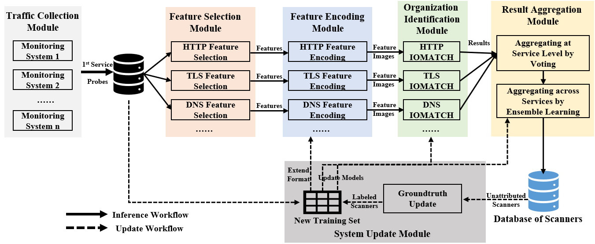

ScannerGrouper — Built for Long-Term
Operation
We are pleased to announce that ScannerGrouper is now capable of long-term operation! ScannerGrouper is a
darknet-independent system specifically designed to identify the organizations behind Internet scanners in
real-world scenarios. To understand how it works, we highly recommend
our paper for a
detailed look at the technical approach. In addition, we published a concise
survey article to provide the background context for this study.

The architecture and workflow of
ScannerGrouper
Attribution Results of Acknowledged Internet Scanning Organizations
Internet scanning organizations normally utilize multiple scanners to distribute scanning tasks. We define a
scanner as an entity or program identified by public IP addresses that sends probes / probing packets to one or
more remote hosts with the aims of (1) detecting hosts that respond to the packets and (2) extracting
information from the response packets sent by the hosts.
Unlike earlier Internet scanning organizations, some newer ones openly disclose their scanning objectives on
public websites. We term these as acknowledged Internet scanning organizations. Only a few of them have made all
of their Internet scanner IP addresses publicly available, and we have compiled these organizations here:
[link]. For other organizations, by leveraging
the long-term operation of ScannerGrouper, we are able to identify the public IP addresses of the Internet
scanners they employ. In addition, we utilized the well-known
AbuseIPDB
database to conduct an abuse analysis of these IP addresses. We regard scanner IPs with an
abuseConfidenceScore no less than 25 as abusive scanner IPs. The statistical results of this analysis are presented
in the figure below (as of 09.2025).
Note: As stated in
our paper, ScannerGrouper does not guarantee 100% accuracy, and potential errors in
organizational attribution may exist.
Software
The ScannerGrouper presented in the CCS paper, together with two honeypot datasets introduced in the paper, have
been released as open-source resources.
Source:
github.com/lemonhx25/scannergrouper
ScannerGrouper: A Generalizable and Effective Scanning Organization Identification System
Toward the OpenWorld
Abstract. In recent years, many scanning organizations deploy large numbers of scanners to actively
probe the Internet. Identifying the organizations behind these scanners is of significant value. The problem of
analyzing the sources of scanners has been investigated in various studies. However, as far as we know, the
problem of effectively and generally identifying scanner organizations in real-world scenarios remains unsolved.
In this paper,we present ScannerGrouper, a darknet-independent system specifically designed to identify the
organizations behind Internet scanners in real-world scenarios. ScannerGrouper leverages monitoring systems
capable of capturing service probes, e.g., honeypots, to collect traffic for subsequent analysis. To address the
robustness challenge, ScannerGrouper selects features from the payloads of the first service probes sent by
scanners through statistical analysis, and aggregates the identification results from multiple service-specific
classifiers. To tackle the open-world issue, ScannerGrouper customizes a state-of-the-art open-set model to our
specific task, and updates the system incrementally.We conduct extensive experiments to validate ScannerGrouper
effectiveness. ScannerGrouper outperforms baseline solutions in identification performance, achieving a weighted
average F1-score that is 1.63 to 4.05 times higher.We also experimentally analyze the identification results of
unattributed scanners, training time, the performance of possible alternative models of the core module, and the
impact of hyperparameters, etc.
Paper. Read the CCS version of our paper here:
[PDF].
Read the full version of our paper here:
[PDF]
Bib. The BibTeX citation for this paper can be found here:
[bib]
Internet Scan Source Identification: A Survey
Abstract. Recently, Internet scanning activities have increased significantly, while the purposes and
impacts of these scans have grown increasingly complex. Organizations dedicated to enhancing Internet security,
as well as malicious ones, both conduct frequent and systematic scans across the entire IPv4 address space and
partial IPv6 address space. In this context, the scan source identification, on which scan intelligence relies,
is crucial as it supports in-depth analysis of the scanning behavior of organizations and helps uncover the real
identity and size of potential attack organizations.
In this article, we provide an extensive survey on Internet scan source identification. We summarize the common
methodology and propose a taxonomy for classification. Based on this taxonomy, we outline the current state of
Internet scan source identification research. Furthermore, we identify existing challenges and suggest future
directions in this field.
Paper. Read the final version of our paper here:
[PDF]
Bib. The BibTeX citation for this paper can be found here:
[bib]
Enhuan Dong:
dongenhuan [AT]
tsinghua.edu.cn
Xin He:
hexin21 [AT]
mails.tsinghua.edu.cn